1 / 37
1 / 37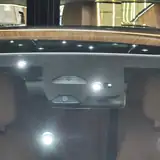
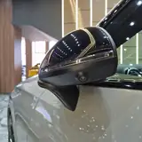
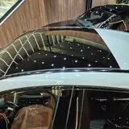
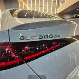
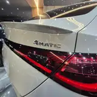
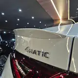
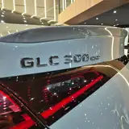
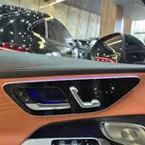
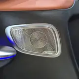
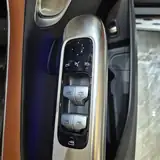
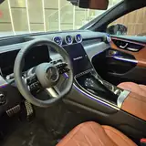
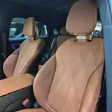
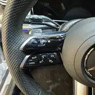
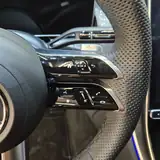
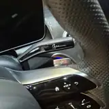
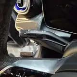
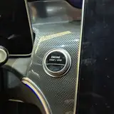
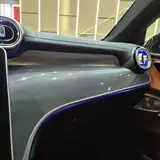
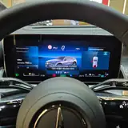
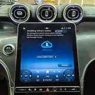
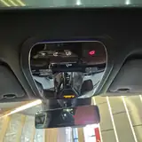
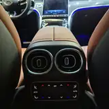
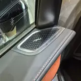
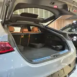
Mercedes-Benz
Mercedes-Benz GLC 300 de 4MATIC Coupé neuf 2026 à Tanger
Disponible
Mercedes-Benz GLC 300 de 4MATIC Coupé disponible dans notre showroom Aurea Premium Cars, avenue Moulay Rachid à Tanger. Moteur : diesel turbo 2,0 L 4 cylindres avec moteur électrique, 333 ch. Boîte de vitesses : automatique 9 rapports (9G-TRONIC). Intérieur : cuir marron Siena et noir. Équipement : toit panoramique, son Burmester. Voiture neuve, modèle 2026. Demandez le prix sur WhatsApp et réservez une visite pour la voir sur place.
Aperçu
- Année
- 2026
- Kilométrage
- Neuf
- Couleur
- Gris Alpin
- Carrosserie
- SUV
- Intérieur
- Cuir marron Siena et noir
- Équipement
- Toit panoramique, son Burmester
- Importée de
- Sur demande
Moteur et transmission
- Moteur
- Diesel turbo 2,0 L 4 cylindres avec moteur électrique
- Couple
- 750 Nm
- Boîte de vitesses
- Automatique 9 rapports (9G-TRONIC)
- Transmission
- Quatre roues motrices (4MATIC)
- Carburant
- Hybride rechargeable diesel
- Batterie
- 31.2 kWh
- Autonomie électrique
- 113 à 130 km (WLTP)